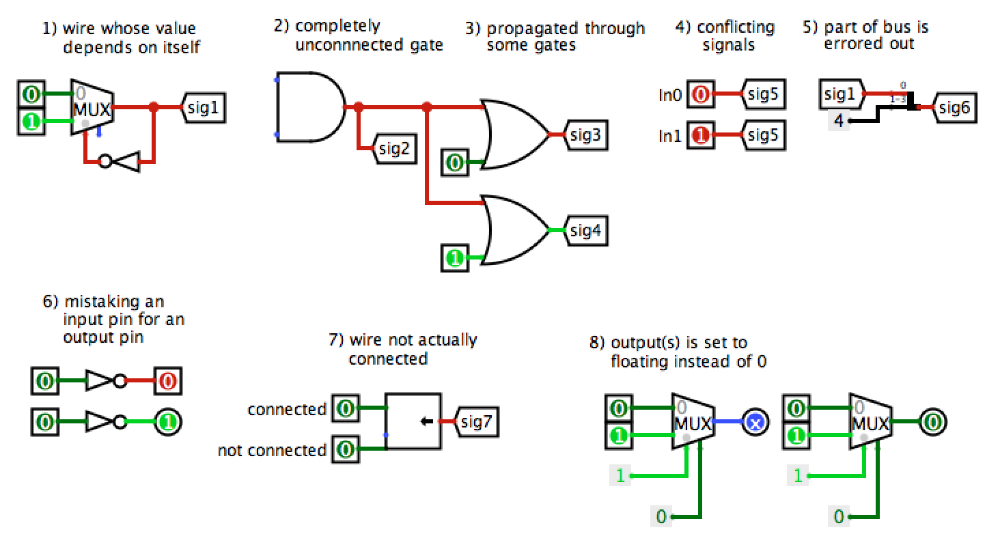

Due March 7th, 2018 @ 11:59:59 pm
Updates and Clarifications
Check here for all updates. Check Piazza for VERY important updates. If you haven't read the Piazza post, go read it now!
Overview
In this project you will be using Logisim to implement a simple 32-bit processor, with an ISA that uses a subset of RISC-V instructions. This reduced ISA utilizes 32 registers that hold 32 bits of data, and a 32 bit memory address space.
In part I, you will make the Regfile and ALU.
IMPORTANT INFO - PLEASE READ
- You are allowed to use any of Logisim's built-in blocks for all parts of this project.
- LOGISM DISCLAIMER: From past experience, it is best practice to put your project files under version control (Bitbucket). We have had students lose their work due to Logism incorrectly formatting their files. So please, use Bitbucket and commit your work every so often so you always have a backup for yourself and just in case something goes wrong.
- Approach this project like you would any coding assignment: construct it piece by piece and test each component early and often! Use circuits as programming modules. Go to tab Project and click add circuit. DO NOT write your own .circ files and import as library.
- Sample tests for a completed ALU and Regfile have been included in proj3-starter - just run the script ./run-sanity-test.sh. We recommend running the sample tests locally, but they only work with python 2.7. As always, keep in mind that these tests are NOT comprehensive and you will need to do further testing on your own. There is also a script to help you write more tests for your ALU (see the Testing section).
- MAKE SURE TO CHECK YOUR CIRCUITS WITH THE GIVEN HARNESSES TO SEE IF THEY FIT! YOU WILL FAIL ALL OUR TESTS IF THEY DO NOT.
(This also means that you should not be moving around given inputs and outputs in the circuits). - Because the files you are working on are not plain code and circuit schematics, they can't really be merged. DO NOT WORK ON THE SAME FILE IN TWO PLACES AND TRY TO MERGE THEM. YOU WILL NOT BE ABLE TO MERGE THEM AND YOU WILL BE SAD.
0) Obtaining the Files
Similarly to other projects, we will be distributing the project files through Bitbucket. However, make sure that you are using your newly created project 3 repository! The repository that contains the starter code is named proj3-starter. It is important to make a repository in case you make any changes or delete files you don't want to delete!
An abridged version of the commands is reproduced below:
git clone https://bitbucket.org/mybitbucketusername/proj3-xxx.git
# MAKE SURE TO REPLACE mybitbucketusername with your username and xxx with your three letter login.
cd proj3-xxx
git remote add proj3-starter https://github.com/61c-teach/sp18-proj3-starter.git
git fetch proj3-starter
git merge proj3-starter/part1
Details
1) Register File
As you learned in class, RISC-V architecture has 32 registers. However, in this project, You will only implement 10 of them (specified below) to save you some repetitive work. This means your rs and rd signals would still be 5-bit, but we will only have the specified registers in our test.
Your regfile should be able to write to or read from these registers specified in a given RISC-V instruction without affecting any other registers. There is one notable exception: your regfile should NOT write to $0, even if an instruction try. Remember that the Zero Register should ALWAYS have the value 0x0. You should NOT gate the clock at any point in your regfile: the clock signal should ALWAYS connect directly to the clock input of the registers without passing through ANY combinational logic.
The registers and their corresponding numbers are listed below.
| Register # | Register Name |
| x0 | zero |
| x1 | ra |
| x2 | sp |
| x5 | t0 |
| x6 | t1 |
| x7 | t2 |
| x8 | s0 |
| x9 | s1 |
| x10 | a0 |
| x11 | a1 |
You are provided with the skeleton of a register file in regfile.circ. The register file circuit has six inputs:
| Input Name | Bit Width | Description |
| Clock | 1 | Input providing the clock. This signal can be sent into subcircuits or attached directly to the clock inputs of memory units in Logisim, but should not otherwise be gated (i.e., do not invert it, do not "and" it with anything, etc.). |
| Write Enable | 1 | Determines whether data is written on the next rising edge of the clock. |
| Read Register 1 | 5 | Determines which register's value is sent to the Read Data 1 output, see below. |
| Read Register 2 | 5 | Determines which register's value is sent to the Read Data 2 output, see below. |
| Write Register | 5 | Determines which register to set to the value of Write Data on the next rising edge of the clock, assuming that Write Enable is a 1. |
| Write Data | 32 | Determines what data to write to the register identified by the Write Register input on the next rising edge of the clock, assuming that Write Enable is 1. |
The register file also has the following outputs:
| Output Name | Bit Width | Description |
| Read Data 1 | 32 | Driven with the value of the register identified by the Read Register 1 input. |
| Read Data 2 | 32 | Driven with the value of the register identified by the Read Register 2 input. |
| ra Value | 32 | Always driven with the value of ra (This is a DEBUG/TEST output.) |
| sp Value | 32 | Always driven with the value of sp (This is a DEBUG/TEST output.) |
| t0 Value | 32 | Always driven with the value of t0 (This is a DEBUG/TEST output.) |
| t1 Value | 32 | Always driven with the value of t1 (This is a DEBUG/TEST output.) |
| t2 Value | 32 | Always driven with the value of t2 (This is a DEBUG/TEST output.) |
| s0 Value | 32 | Always driven with the value of s0 (This is a DEBUG/TEST output.) |
| s1 Value | 32 | Always driven with the value of s1 (This is a DEBUG/TEST output.) |
| a0 Value | 32 | Always driven with the value of a0 (This is a DEBUG/TEST output.) |
The DEBUG/TEST outputs are present because those registers are more special than the others - they are for testing and debugging purposes, and will be used in the autograder tests! If you were implementing a real regfile, you would omit those outputs. In our case, be sure they are included correctly! If they are not, we won't be able to grade your submission.
You can make any modifications to regfile.circ you want, but the outputs must obey the behavior specified above. In addition, your regfile.circ that you submit must fit into the regfile-harness.circ file we have provided for you. This means that you should take care to not reorder inputs or outputs. If you need more space, however, you can move them around if you are careful and maintain their relative positioning to each other. To verify your changes didn't break anything, simply open regfile-harness.circ and ensure there are no errors and the circuit functions well. We will be using a similar file to test your register file for grading, so you should download a fresh copy of regfile-harness.circ and make sure your regfile.circ is cleanly loaded before submitting.
HINTS: I would advise you not to use the enable input on your Muxes. In fact, you can turn that feature off. I would also advise you to also turn "three-state?" to off. Take a look at all the inputs to a logisim register and see what they all do.
2) Arithmetic Logic Unit (ALU)
Your second task is to create an ALU that supports all the operations needed by the instructions in our ISA (which is described in further detail in the next section). Please note that we treat overflow as RISC-V does with unsigned instructions, meaning that we ignore overflow.
We have provided a skeleton of an ALU for you in alu.circ. It has three inputs:
| Input Name | Bit Width | Description |
| X | 32 | Data to use for X in the ALU operation. |
| Y | 32 | Data to use for Y in the ALU operation. |
| Switch | 4 | Selects what operation the ALU should perform (see the list of operations with corresponding switch values below). |
... and two outputs:
| Output Name | Bit Width | Description |
| Equal | 1 | High iff the two inputs X and Y are equal; low otherwise. |
| Result | 32 | Result of the ALU Operation. |
And as previously promised, here is the list of operations that you need to implement (along with their associated Switch values). You are allowed and encouraged to use built-in logisim blocks to implement the arithmetic operations.
| Switch Value | Instruction |
| 0 | add: Result = X + Y |
| 1 | and: Result = X & Y |
| 2 | or: Result = X | Y |
| 3 | xor: Result = X^Y |
| 4 | srl: Result = (unsigned) X >> Y |
| 5 | sra: Result = (signed) X >> Y |
| 6 | sll: Result = X << Y |
| 7 | slt: Result = (X < Y) ? 1 : 0 Signed |
| 8 | div: Result = (unsigned) X / Y |
| 9 | rem: Result = X % Y |
| 10 | mult: Result = X*Y[31:0] |
| 11 | mulh: Result = X*Y[63:32] |
NOTE: The multiplier circuit built into logisim is signed (when operating on 32-bit numbers)! You are NOT expected to implement multiply from scratch.
Tl;dr: Use the built-in multiply blocks, and don't worry about it.
Some additional things to keep in mind:
- The output Equal, which is true iff X and Y are equal, must always output the correct comparison result regardless of the Switch value.
Note: Your ALU must be able to fit in the provided harness alu_harness.circ.
Follow the same instructions as the register file regarding rearranging inputs and outputs of the ALU. In particular, you should ensure that your ALU is correctly loaded by a fresh copy of alu-harness.circ before you submit.
Logisim Notes
If you are having trouble with Logisim, RESTART IT and RELOAD your circuit! Don't waste your time chasing a bug that is not your fault. However, if restarting doesn't solve the problem, it is more likely that the bug is a flaw in your project. Please post to Piazza about any crazy bugs that you find and we will investigate.
Things to Look Out For
- Use Library Reference! It is under Help tab and it tells you the specifications of each built-in component
- Do NOT gate the clock! This is very bad design practice when making real circuits, so we will discourage you from doing this by heavily penalizing your project if you gate your clock.
- BE CAREFUL with copying and pasting from different Logisim windows. Logisim has been known to have trouble with this in the past.
- When you import another file (Project --> Load Library --> Logisim Library...), it will appear as a folder in the left-hand viewing pane. The skeleton files should have already imported necessary files.
- Changing attributes before placing a component changes the default settings for that component. So if you are about to place many 32-bit pins, this might be desirable. If you only want to change that particular component, place it first before changing the attributes.
- When you change the inputs & outputs of a sub-circuit that you have already placed in main, Logisim will automatically add/remove the ports when you return to main and this sometimes shifts the block itself. If there were wires attached, Logisim will do its automatic moving of these as well, which can be extremely dumb in some cases. Before you change the inputs and outputs of a block, it can sometimes be easier to first disconnect all wires from it.
- Error signals (red wires) are obviously bad, but they tend to appear in complicated wiring jobs such as the one you will be implementing here. It's good to be aware of the common causes while debugging:

Logisim's Combinational Analysis Feature
Logisim offers some functionality for automating circuit implementation given a truth table, or vice versa. Though not disallowed (enforcing such a requirement is impractical), use of this feature is discouraged. Remember that you will not be allowed to have a laptop running Logisim on the final.
Testing
For part 1, we have provided you with a script for running tests on the ALU and regfile called "run_sanity_check.sh". Running ./run_sanity_check.sh will copy your alu and regfile into the tests directory and run two ALU tests and two Regfile tests, which are stored in the tests directory as well. These tests drop in your work into a very slightly modified version of the harness and run it with a small set of inputs. The output is then compared against the provided reference.
If you fail a test and want to figure out what went wrong, you can go into your tests folder and open the harness corresponding to that test. Right click on your regfile or ALU and choose "view main." You can then see your regfile with the inputs provided by the test. Make sure your regfile or ALU behaves the way it ought to!
Keep in mind, as always, that the tests we provided are not comprehensive. Take a look at the file called TESTING INSTRUCTIONS to see how you can make your own tests. Basically, you'll want to come up with the values to put inside the different memory units to exercise different behaviors of the ALU and RegFile. You can modify the value in the memory units and probing the behavior of your ALU and regfile.
For example, you make your own tests by making another .circ file that is very similar to ones we provided (e.g. alu-add.circ or regfile-insert.circ). Then you can modify the memory unit in your test file to feed different inputs to your circuit and verify that the output is what you would expect. Note that in the sanity tests, we compare your output to some reference .out files. The .out files contain values for all the outputs at every clock period through out the running of the test. It is not very wise to attempt creating your own .out files for testing purposes.
Note: the autograder only works with python 2.7, so it may be easier to run it remotely off of the hive* servers if you haven't set up your python environments.
Submission
There are two steps required to submit proj3-1. Failure to perform both steps will result in loss of credit:
First, you must submit using the standard unix submit program on the instructional servers. This assumes that you followed the earlier instructions and did all of your work inside of your git repository. To submit, follow these instructions after logging into your -XX class account:
cd ~/proj3-XXX # Or where your shared git repo is
submit proj3-1Once you type "submit proj3-1", follow the prompts generated by the submission system. We will be looking for ONLY two files (alu.circ and regfile.circ) so make sure all your changes can be found in those two files. It will tell you when your submission has been successful and you can confirm this by looking at the output of glookup -t.
Additionally, you must submit proj3-1 to your Bitbucket repository:
cd ~/proj3-xxx # Or where your shared git repo is git add -u git commit -m "project 3-1 submission" git tag "proj3-1-sub" # The tag MUST be "proj3-1-sub". Failure to do so will result in loss of credit git push origin proj3-1-sub # This tells git to push the commit tagged proj3-1-sub
Resubmitting
If you need to re-submit, you can follow the same set of steps that you would if you were submitting for the first time, but you will need to use the -f flag to tag and push to Bitbucket:
# Do everything as above until you get to tagging
git tag -f "proj3-1-sub"
git push -f origin proj3-1-sub
Note that in general, force pushes should be used with caution. They will overwrite your remote repository with information from your local copy. As long as you have not damaged your local copy in any way, this will be fine.
Deliverables
- regfile.circ
- alu.circ
We will be using our own versions of the *-harness.circ files, so you do not need to submit those. In addition, you should not depend on any changes you make to those files.
Grading
This project will be graded in large part by an automated grading script, i.e. we will not look at your circuit. If you would like a regrade, we will give you a chance to request one, but we will also automatically deduct some percentage from your final proj3-1 grade, unless it is an error with our test cases.